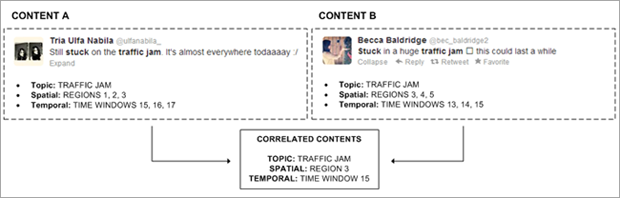
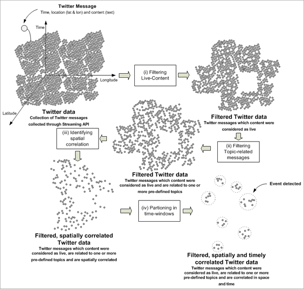

More Website Templates @ TemplateMonster.com -September 19th, 2011!
About
What is the W-IS-H project?
The W-IS-H project aims at discovering what is happening in the world through the analysis of social data. Our goal is to detect local events that are happening at the moment in a city and show this information to web users, so they can react to their occurrence.
Collecting social data
We are currently collecting Twitter data created in these three cities: New York, São Paulo and Rio de Janeiro. We only collect tweets which were attached to their geographic coordinates and we know that the users posted them from these cities. This is possible through the Twitter Streaminh API that allows receiving only data created in specific geographic boundaries. Despite having access to small portion of Twitter data, as we do not have access to Twitter firehouse, we are convinced that the volume received is sufficient for event-detection (our primary results encouraged us). And it is always good to remember that, by default, all tweets are public and the users who do not want to see their tweets in this (or any other) project, must opt for the private option.
Achieving the goal
Our project consists in the development of an analytical approach to detect real-world events through the filtering and classification of messages published by mobile users in the Twitter social network. The approach is composed by four steps:
We consider content as live when it is created and published while the creator is actually witnessing the real-world event. For instance, a Twitter message informing about a traffic jam may differ regarding time and location. A user may create a Twitter message complaining about the traffic jam while being stuck in the traffic jam himself, in his car. The same user could create a different Twitter message complaining about the same traffic jam when he arrives at his destination. These messages are about the same event, the traffic jam, but with different context attributes, and only the former will be of interest in this research, as we consider it a live-content. In summary, whenever a user is at the place and within the timeframe in between the event’s start and end time, he will be considered a witness of the event. And all the content created and published by them as witness of an event is considered as a live social content of this event.
Correlated-content
We say that some content is correlated to other content when there is a match between their location, time and topic attributes. For instance, let’s consider that content A and B are correlated according to our analytical approach. This happened due to, after the classification steps, both were classified with the topic sports, while content A was classified as belonging to region 1, 2, and 3 and created in time windows 15, 16 and 17. In the other hand, content B was classified as belonging to region 3, 4 and 5 and created in time windows 13, 14 and 15. Therefore, they were considered correlated as there was a match between them – sports topic, region 3 and time window 15.

Achitecture
Pipelined detection approach
Our proposal consists in the development of a system for event-detection through the analysis of Twitter data. The pipelined detection approach is defined as a sequence of four steps, as shown below.

Events
Where are the events detected?
Soon, the list of events detected will be available for everyone.